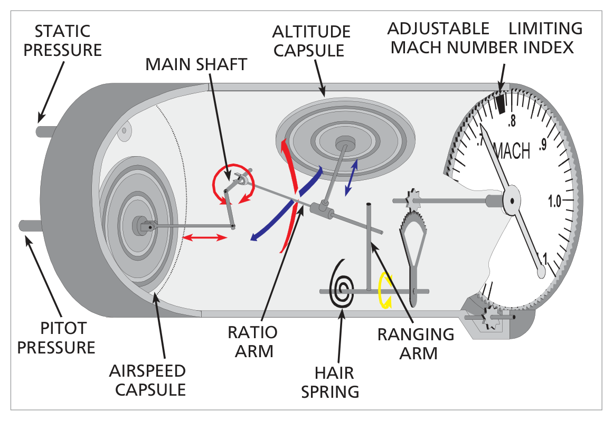
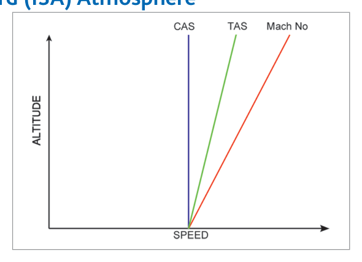
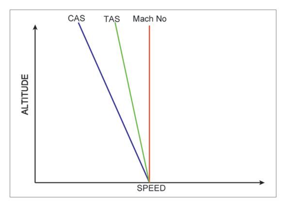
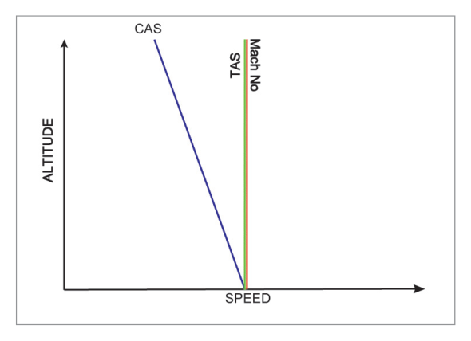
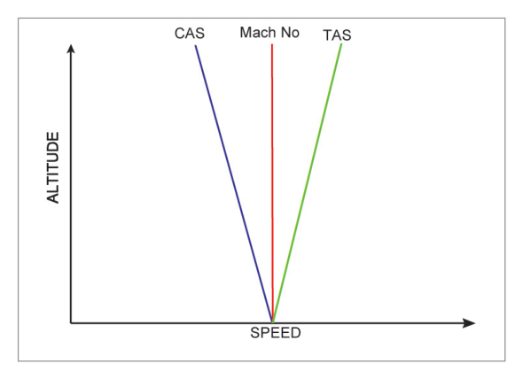

What this section covers: The dangers of high-speed flight and the need for a Machmeter.
As an aircraft approaches the local speed of sound, airflow over parts of the fuselage or wings may be accelerated to, or beyond, the speed of sound, forming shock waves. Consequences include:
Increased drag
Reduced lift
Mach tuck — a sudden, severe downward-pitching trim change
Buffeting
Reduction in, or loss of, control effectiveness
A limiting Mach number (MMO) is specified for each aircraft based on flight trials. This must not be exceeded. The Machmeter displays the current Mach number so the pilot can remain below MMO.
MMO — Never Exceed Mach Number: Determined by flight trials. Exceeding it risks Mach tuck, buffet, and loss of control. The Machmeter provides the primary speed reference at altitude.
2. Speed of Sound
What this section covers: The formula for Local Speed of Sound (LSS) and how it varies with temperature and altitude.
The speed of sound is not constant — it varies with air temperature only, not pressure or density directly.
LSS = 38.95 × √T
Where:
LSS = Local Speed of Sound (knots)
38.95 = constant
T = Absolute temperature (Kelvin)
(0°C = 273K; T(K) = T(°C) + 273)
Key Rule: Higher temperature → higher LSS. Temperature normally falls with altitude → LSS normally falls with altitude. Above the tropopause (ISA) temperature is constant → LSS is constant at ~573 kt.
What this section covers: How the Machmeter derives Mach number from pitot and static pressures.
Mach Number (MN) = TAS / LSS
Since MN ∝ √(Dynamic Pressure / Static Pressure)
= √((Pitot Pressure − Static Pressure) / Static Pressure)
Density (ρ) cancels → MN is proportional to √(Dp / Ps)
where Dp = dynamic pressure, Ps = static pressure
The Machmeter uses two capsules:
Airspeed Capsule — expands/contracts with dynamic pressure (pitot − static). Senses TAS component.
Altitude (Aneroid) Capsule — expands/contracts with changes in static pressure in the instrument case. Compensates for the effect of altitude on the speed of sound.
Their combined mechanical output via the ratio arm and ranging arm drives the pointer to display Mach number directly.

Fig. 7.1 – The Machmeter: airspeed capsule, altitude capsule, ratio arm, and ranging arm — source p.84
4. Machmeter Construction
What this section covers: How the two capsules interact to produce a Mach number reading.
Static pressure enters the instrument case (acts on the altitude capsule).
Pitot pressure is fed directly into the airspeed capsule.
Expansion of the airspeed capsule is transmitted via the airspeed link and main shaft to the ratio arm.
The altitude capsule also governs the position of the ratio arm.
The spring-loaded ranging arm transmits ratio arm movement to the pointer.
Rule: If either or both capsules expand (IAS increases and/or altitude increases), the ranging arm rotates and indicated Mach number increases. Reverse for a decrease.
An adjustable Mach limit index can be set via a small knob to the aircraft's MMO, providing a visual speed warning.
5. Machmeter Errors
What this section covers: Which errors affect the Machmeter and which do not — a frequent exam focus.
Errors the Machmeter DOES suffer:
Instrument Error — manufacturing imperfections
Position Error — disturbed airflow at pitot/static sources; can change sign at high Mach numbers
Manoeuvre-Induced Error — unpredictable changes in static source airflow during manoeuvres
Errors the Machmeter does NOT suffer:
Temperature Error — cancels out (density appears in both numerator and denominator)
Density Error — same reason, density cancels
Compressibility Error — the Machmeter is calibrated to the dynamic/static pressure ratio, so compressibility is inherently calibrated out
5.1 Position Error at High Mach Numbers
At higher Mach numbers, changes in airflow can cause position error to increase in magnitude and even change sign. If position error causes the Machmeter to under-read, this could become dangerous. The normal arrangement in modern jet transport aircraft is to bias instrument and position error so the Machmeter always over-reads — providing a safety margin.
Exam Tip: The Machmeter is NOT affected by temperature or density errors. Only three errors: instrument, position, manoeuvre-induced. This contrasts with the ASI which also has density and compressibility errors.
6. Blockages
What this section covers: Effect of pitot and static blockages on Machmeter readings — note these are identical to ASI blockage effects.
Source Blocked
Condition
Effect on Machmeter
Static
Climb at constant IAS
Altitude capsule doesn't move; airspeed capsule contracts (static in pitot falls but case static frozen) → Under-reads
Airspeed capsule expands in error (capsule static > case static) → Over-reads
Pitot
Descent at constant IAS
Airspeed capsule contracts (capsule static < case static) → Under-reads
Exam Tip: Machmeter blockage errors are identical to ASI blockage errors. Static blocked in climb → under-reads; static blocked in descent → over-reads. Pitot blocked is the opposite.
7. Abbreviations
Abbreviation
Meaning
MMR
Machmeter Reading — the uncorrected raw reading
IMN
Indicated Mach Number — MMR corrected for instrument error (values quoted in Flight Manuals are normally IMN)
TMN
True Mach Number — IMN corrected for position error
MMO
Maximum Operating Mach Number — the never-exceed limit
8. Climb at Constant CAS – Standard Atmosphere
What this section covers: How TAS and Mach number change during a constant-CAS climb.
Example: Climbing at 330 kt CAS from sea level to FL360 in ISA:
TAS increases from 330 kt to 593 kt
Mach number increases from M 0.5 to M 1.05
This rapid rise in Mach number is why high-performance aircraft are flown at constant CAS (or IAS) in the lower part of the climb, then transition to a constant Mach number for the remainder — to avoid inadvertently exceeding MMO.

Fig. 7.2 – Constant CAS climb: CAS (blue) constant, TAS (green) increases, Mach (red) increases faster — source p.87
9. Descent at Constant Mach Number – Standard Conditions
What this section covers: How TAS and CAS change during a constant Mach descent.
During a descent in ISA, temperature increases → LSS increases. To maintain constant Mach number, TAS must also increase (MN = TAS/LSS). As density also increases during descent, CAS increases even more rapidly (Dynamic Pressure = ½ρV²). Example: M 0.8 descent from FL400 to MSL:
At FL400: TAS = 450 kt, CAS = 242 kt
At MSL: TAS = 528 kt, CAS = 528 kt (would exceed VMO)
This is why CAS is used in the descent rather than constant Mach number below a certain altitude.

Fig. 7.3 – Constant Mach descent: as altitude decreases, TAS and CAS both increase — source p.87
10. Climb/Descent through Isothermal Layer and Inversion
What this section covers: How temperature anomalies affect the CAS/TAS/Mach relationship.
10.1 Isothermal Layer (temperature constant)
Condition
LSS
TAS
CAS
Constant Mach — climbing
Constant (temp constant)
Constant (MN×LSS)
Decreases (density reduces)
Constant Mach — descending
Constant
Constant
Increases (density increases)
Constant CAS — climbing
Constant
Increases
Constant

Fig. 7.4 – Isothermal layer: TAS constant at constant Mach, CAS changes with density — source p.88
10.2 Inversion (temperature increases with altitude)
Condition
LSS
TAS
CAS
Constant Mach — climbing
Increases (temp rises)
Increases (MN×LSS)
Decreases (density reduces faster than TAS rises)
Constant Mach — descending
Decreases
Decreases
Increases
Constant CAS — climbing
Increases
Increases (greater rate than MN)
Constant

Fig. 7.5 – Inversion: TAS increases at constant Mach because LSS increases with temperature — source p.88
11. Climb/Descent Summary
Universal Rules (apply in all conditions):
TAS always increases when climbing at a constant CAS.
Climbing at constant TAS → CAS always decreases.
Climbing at constant CAS → Mach number always increases.
Climbing at constant Mach → CAS always decreases.
Reason: Pressure effect on air density dominates over temperature variation in LSS.
flowchart TD
A["Climb"] --> B{"What is constant?"}
B -->|CAS| C["TAS increases Mach number increases"]
B -->|TAS| D["CAS decreases Mach number: depends on temp"]
B -->|Mach number| E["TAS depends on LSS CAS always decreases"]
Quick Revision – Sections 8–11: Constant CAS climb → TAS↑ Mach↑. Constant Mach climb → CAS↓ TAS depends on temp. The climb/descent diagrams (Fig 7.2 & 7.3) are mirror images. In isothermal: constant Mach = constant TAS. In inversion: constant Mach = increasing TAS (climb).
12. Worked Example Problems
What this section covers: Five representative Machmeter calculation problems from the source text.
Problem 1: Speed of Sound at FL380 (ISA)
FL380 is above the tropopause → Temperature = −56.5°C = 216.5K
LSS = 38.95 × √216.5 = 38.95 × 14.71 = 573 knots
Problem 5: Temperature deviation analysis (isothermal layer)
At FL360, JSA temp = −57°C. JSA +9 = −48°C.
Same Mach (0.8) and TAS (467 kt) at FL320 → LSS unchanged → temperature unchanged = −48°C.
JSA at FL320 = −49°C → deviation = +1°C.
(This shows the aircraft is flying through an isothermal layer.)
Navigation Computer Tips:
Set Mach index arrow against temperature (°C) in Airspeed window.
Read TAS against Mach number on inner scale.
M 1.0 is marked as the blue "10" on the inner scale.
13. Mach/Airspeed Indicator
What this section covers: The combined Mach/ASI instrument and its two types.
Since commercial aircraft need both IAS and Mach indications, the instruments are combined. Two versions exist:
Self-contained instrument — fed directly from pitot and static sources.
ADC-fed instrument — receives computed data from the Air Data Computer.
Construction Features
Airspeed pointer moves clockwise over a fixed scale.
From M 0.5, Mach number is read from the same pointer against a moving Mach scale that rotates anticlockwise as Mach increases.
A striped VMO needle may mark the maximum operating airspeed.
Corrects for instrument and position errors → displays CAS instead of IAS.
Can show digital displays for both Mach and CAS.
Errors of the Combined Instrument: Has the errors of BOTH the Machmeter AND the ASI: instrument, position, manoeuvre-induced, density, and compressibility errors.
Quick Revision – Chapter 7:
LSS = 38.95 × √T (Kelvin) in knots. At MSL ISA = 661 kt; tropopause = 573 kt.
Questions 1–9 reproduced verbatim from Oxford Instrumentation Chapter 7. Answer key from source.
Q1.The local speed of sound is equal to: (K = Constant)
K √ temperature (°F) knots
K √ temperature (K) knots
K √ temperature (°C) knots
K √ temperature (K) metres per second
Correct Answer: (b) K √ temperature (K) knots
Explanation: The formula LSS = 38.95 × √T requires T in Kelvin (absolute temperature) and gives LSS in knots. Using °C or °F would give incorrect results because negative Celsius values would make the square root imaginary. See Section 2.
Why the others are wrong:
(a) °F cannot be used — the formula requires absolute temperature.
(c) °C cannot be used because 0°C ≠ 0 absolute; must add 273 to convert to Kelvin.
(d) The unit is knots, not m/s (a different constant would be required for m/s).
Instructor's Note: Always convert to Kelvin: T(K) = T(°C) + 273. This is non-negotiable for all LSS calculations.
Q2.At FL350 with a JSA deviation of −12, the true airspeed when flying at M 0.78 is:
460 kt
436 kt
447 kt
490 kt
Correct Answer: (b) 436 kt
Explanation: JSA FL350 temperature = −70°C (JSA lapse 2°/1000ft, 35×2=70, MSL +15 −70 = −55°C... wait, let me recalculate: JSA at FL350 = 15 − (35×2) = 15 − 70 = −55°C. Deviation −12 → actual temp = −55 − 12 = −67°C = 206K. LSS = 38.95×√206 = 38.95×14.35 = 559 kt. TAS = 0.78×559 ≈ 436 kt. See Section 2 and Section 12.
Why the others are wrong:
(a) 460 kt would correspond to a warmer temperature (ISA or less cold).
(c) 447 kt and (d) 490 kt result from incorrect temperature calculations or wrong JSA lapse rate assumptions.
Instructor's Note: JSA lapse rate is 2°C per 1000 ft with no tropopause (unlike ISA which stops at FL360). Always state whether you're using ISA or JSA in exam solutions.
Q3.When climbing at a constant Mach number below the tropopause through an inversion:
the CAS and TAS will both increase
the CAS and TAS will both decrease
the CAS will decrease and the TAS will increase
the CAS will increase and the TAS will decrease
Correct Answer: (c) the CAS will decrease and the TAS will increase
Explanation: In an inversion, temperature rises with altitude → LSS increases. For constant Mach number, TAS = MN × LSS → TAS must increase. Despite TAS increasing, air density decreases faster during the climb, so CAS (which is density-dependent) decreases. See Section 10.2.
Why the others are wrong:
(a) CAS cannot increase — density effect always dominates in a climb at constant Mach.
(b) TAS cannot decrease — the rising LSS in an inversion forces TAS upward at constant Mach.
(d) Reverses the correct answer.
Instructor's Note: Constant Mach climb: CAS ALWAYS decreases. TAS behaviour depends on the temperature profile — in an inversion it increases, in ISA it decreases, in isothermal it stays constant.
Q4.When descending below the tropopause under normal conditions (increasing temperature) at a constant CAS:
both TAS and Mach number will decrease
both TAS and Mach number will increase
the TAS will decrease and the Mach number will increase
the TAS will increase and the Mach number will decrease
Correct Answer: (a) both TAS and Mach number will decrease
Explanation: This is the mirror image of constant CAS climb. In a constant CAS descent under ISA conditions, density increases → TAS decreases (TAS = CAS × density correction, lower altitude = denser air = lower TAS). LSS increases (higher temperature) but TAS falls faster → Mach number decreases. See Section 8.
Why the others are wrong:
(b) Incorrectly suggests both increase — that would be a constant CAS climb, not descent.
(c) & (d) Incorrect combinations — in a constant CAS descent, the pressure/density effect dominates and both TAS and MN decrease.
Instructor's Note: Descent at constant CAS is the mirror image of climb at constant CAS. Climb: TAS↑ Mach↑. Descent: TAS↓ Mach↓.
Q5.Cruising at FL390, M 0.84 is found to give a TAS of 499 kt. The ISA deviation at this level will be:
−17
+17
+19
−19
Correct Answer: (b) +17
Explanation: LSS = TAS/MN = 499/0.84 = 594 kt. √T = 594/38.95 = 15.25 → T = 15.25² = 232.6K = −40.4°C ≈ −40°C. FL390 is above the ISA tropopause (ISA temp = −56.5°C). Deviation = actual − ISA = −40 − (−56.5) = +16.5 ≈ +17. See Section 12.
Why the others are wrong:
(a) −17 and (d) −19 would mean a colder-than-ISA temperature — but we calculated a warmer temperature.
(c) +19 is close but the arithmetic gives +17 when rounded correctly.
Instructor's Note: Process: TAS/MN → LSS → (LSS/38.95)² → T(K) → T(°C) → compare with ISA. Practice this sequence until automatic.
Q6.The errors to which the Machmeter is subject are:
instrument error, position error, compressibility error and manoeuvre induced error
instrument error, position error and manoeuvre induced error
instrument error, position error, barometric error, temperature error and manoeuvre induced error
instrument error, position error, density error and manoeuvre induced error
Correct Answer: (b) instrument error, position error and manoeuvre induced error
Explanation: The Machmeter is calibrated to the ratio of dynamic to static pressure. Density and temperature cancel from the calculation, so no density or temperature error. Compressibility is inherently calibrated out by design. Only instrument, position, and manoeuvre-induced errors remain. See Section 5.
Why the others are wrong:
(a) Compressibility error does not apply — it's calibrated out in the Machmeter.
(c) No barometric or temperature error in the Machmeter.
(d) No density error — density cancels in the Mach number calculation.
Instructor's Note: The Machmeter's immunity to temperature, density, and compressibility errors is its key advantage over the ASI. This is a very common exam question.
Q7.The relationships between TAS, Mach number (MNo) and local speed of sound (LSS) is:
LSS = MNo/TAS
MNo = LSS/TAS
TAS = MNo × LSS
MNo = LSS × TAS
Correct Answer: (c) TAS = MNo × LSS
Explanation: By definition, Mach Number = TAS/LSS. Rearranging: TAS = MNo × LSS. This is the fundamental Mach relationship. See Section 2.
Why the others are wrong:
(a) LSS = MNo/TAS is the inverse of the correct relationship.
(b) MNo = LSS/TAS inverts numerator and denominator.
(d) MNo = LSS × TAS would give huge numbers — dimensionally and physically incorrect.
Instructor's Note: Start from MN = TAS/LSS and rearrange as needed. This single formula underpins all Mach calculations.
Q8.The Machmeter gives an indication of Mach number by measuring the ratio:
Explanation: Mach number ∝ √(Dynamic Pressure / Static Pressure) where Dynamic Pressure = Pitot − Static. The altitude capsule measures static pressure (denominator), the airspeed capsule measures dynamic pressure (numerator). See Section 3.
Why the others are wrong:
(a) Pitot/static gives the ratio used in ASI calculations (total pressure ratio), not pure Mach.
(b) Inverted ratio — would decrease as Mach increases.
(c) Dynamic/pitot is not a meaningful aerodynamic ratio.
Instructor's Note: Dynamic pressure = pitot − static. Mach ∝ √(Dp/Ps). The altitude capsule compensates for changing Ps at different altitudes.
Q9.An aircraft is flying at FL350 with a JSA deviation of +8. The Mach No. is 0.83 and the TAS 485. If the aircraft descends to FL300 and maintains the same Mach No. and TAS, the JSA deviation will now be:
+8
−2
+2
−18
Correct Answer: (b) −2
Explanation: Same Mach (0.83) and same TAS (485) → LSS unchanged → temperature unchanged. From FL350 calculation: LSS = 485/0.83 = 585 kt → T = (585/38.95)² = 225K = −48°C. JSA FL350 = 15−70 = −55°C; deviation +8 → −55+8 = −47°C ≈ −48°C ✓ (consistent). At FL300: JSA = 15−60 = −45°C. Actual temp is still −48°C → deviation = −48−(−45) = −3. Nearest answer is (b) −2 (rounding differences in calculation). The key insight: same Mach + same TAS = same temperature = isothermal layer, so the deviation changes as standard temperature changes with altitude. See Section 12, Problem 5.
Why the others are wrong:
(a) +8 would mean the deviation is the same — but JSA standard temperature changes between FL350 and FL300.
(c) +2 and (d) −18 result from incorrect temperature or JSA calculations.
Instructor's Note: Same MN + same TAS at different altitude → same actual temperature → isothermal layer. The JSA deviation changes because the JSA standard temperature changes with altitude while actual temperature stays the same.